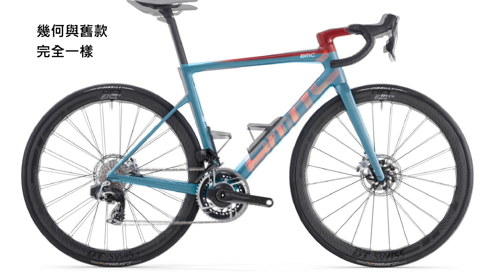
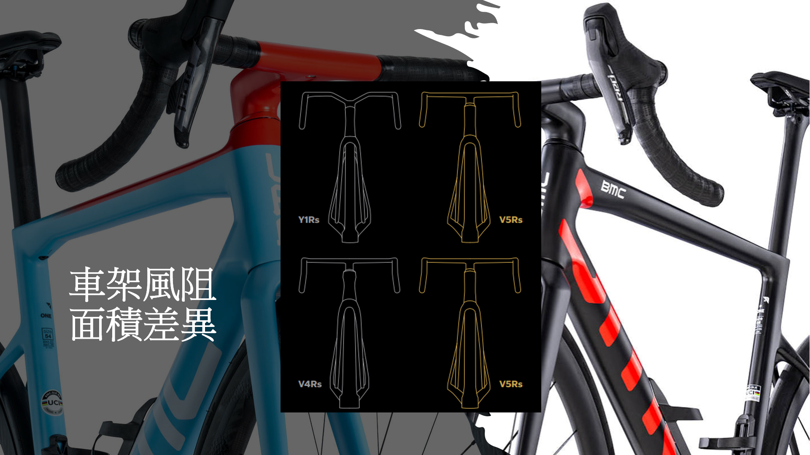
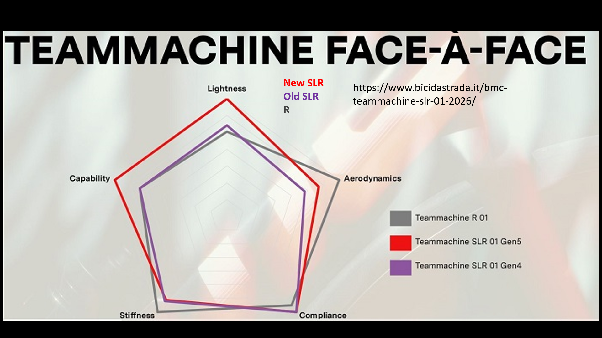
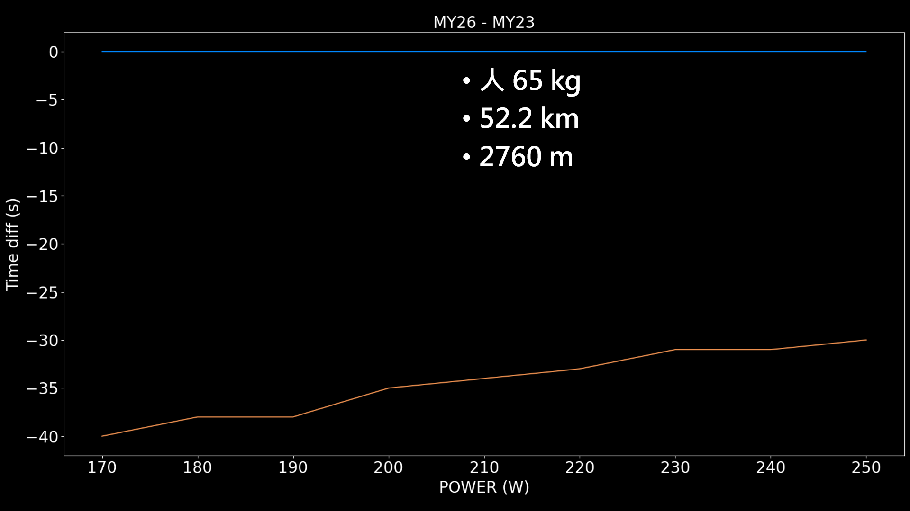

Teammachine SLR 新舊差多少
BMC 的 TEAMMACHINE SLR 暌違五年，終於出了新車 重量也直接少了 200 多克，雖然在大環賽的贊助車隊表現沒其他品牌好，不過好歹計時車也是讓 ROHAN DENNIS 拿到世界冠軍，來看看新車與舊車的差異，以及這台車能讓你爬坡快多少。首先先來看看幾何差異，依樣把舊車與新車疊起來看，可以發現兩者幾乎沒有差異，從幾何數據上來看也是一樣，當然這也是他們想要的，希望從舊款到新款可以不用花太多時間適應。
|  |
|---|
| 圖一：新舊 TEAMMACHINE SLR 差異 |
身為新款的車重量減輕是一定要的，暌違五年左右才有改款，這次重量直接少了 200 多克，不僅車架少了 100 多克，前叉與座管合計也少了 100 克。不過就一些報導來說可以少這麼多，主因是因為車架上的漆換成貼紙，烤漆是真的滿重的，尤其是會變色的，如果直接碳纖+貼紙是可以少掉 50~60 克，所以如果真的要輕就要選消光的。
表一：新舊車架組重量差
| 車架 (g) | 前叉 (g) | 座管 (g) | 總和 (g) | |
|---|---|---|---|---|
| MY26 | 700 | 339 | 134 | 1173 |
| MY23 | 822 | 390 | 183 | 1395 |
| -122 | -51 | -49 | -222 |
除了重量外，風阻減少也是一定有的，就官方宣稱比上一代少了 5%，可以來看一下到底哪裡減少了。仔細看可以看的車前叉整根變細了，所以整體來說重量也輕了，當然爬坡車風阻要減少大概也只能這樣搞。像 V5RS 其實也是差不多的作法，畢竟減少後方亂流要增加部件就會增加重量，而且用減少迎風面積來減少風阻面積，其實很困難，因為還要顧慮到強度，所以爬坡車能做的改進其實不多。
|  |
|---|
| 圖二：迎風面積差異 |
那麼來看一下官方所釋出的雷達圖，可以看到在輕量與空力表現，都比上一代好，而 teammachine R，則是 BMC 的空力車，可以看到剛性跟空力，勝過 SLR 的，這也是一個空力車比較硬的例子。
|  |
|---|
| 圖三：雷達圖 |
看完了與上一代的差異後，不免俗的要來算一下爬坡的差異，依樣拿台灣人喜歡的西進武嶺來計算。可以看到在這個距離下，瓦數越低差異反而越少，這是因為瓦數高風阻就大，而重量較重速度就較慢所以風阻小一些，整體來說就不會有瓦數小的差異那麼大。所以對於很重且瓦數又小的車友來說，選擇爬坡車會讓你比較輕鬆，而瓦數大的車友就盡量選空力車，然後從材料上去降低重量，而不是從高框換成低框，這樣才能發威出你的實力，
|  |
|---|
| 圖四：新舊 TEAMMACHINE SLR 爬武嶺差異 |
 |
|---|
| 註冊並訂閱網站使用表現預估功能 |